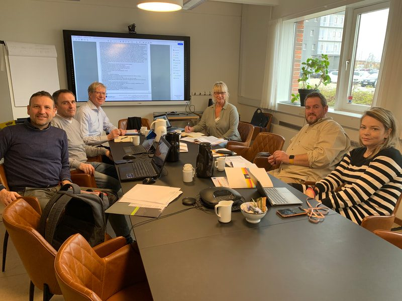

Academic Portal
The integrated system for general language learning: theory modules, interactive exercises and assessment of the skills acquired.
Enter the portal →ADL is Nefeli's learning platform: six specialised portals, exam simulations with automatic correction and reasoned error analysis. Teachers and students log in from the same address, with different pathways.
The platform lives at adl.nefelieducation.eu and can be reached from a computer, tablet or smartphone. Your progress is saved to your profile: you will find everything again from any device.
Every unit has a theory section, applied exercises and learning games that consolidate what has been learned.
Students receive the result immediately, with the error and the rule to review indicated.
Class progress can be read in real time: you step in where needed, not afterwards.

Each portal is a complete environment: modules, exercises, simulations and assessment. You enter from the portal that matches your objective.
The integrated system for general language learning: theory modules, interactive exercises and assessment of the skills acquired.
Enter the portal →Module dedicated to the GESE and ISE exams: simulated spoken tests, exam structures and official assessment criteria.
Enter the module →The English Testing System certification for academic admission and professional recognition: reading, listening, speaking and writing.
Enter the module →A complete simulation of the Italian language certification exams, with automated correction and detailed error analysis.
Enter the simulations →The centre specialising in the Swahili language and the cultures of East Africa, for those who work, travel or do cooperation work.
Enter the Kiswahili Academy →Learning games, consolidation activities and materials to assign to the class, designed for active revision.
Open the laboratory →No random pathways. Every module leads to a measurable result, with the chance to see straight away whether you are improving.
The entry test identifies your real starting point: you do not waste time on what you already know.
Structured lessons, guided exercises and explanations focused on the typical mistakes of that exam.
Complete tests under the same conditions as the official exam, with automatic assessment.
You reach the exam knowing what to expect, with your estimated score and your weak points already corrected.

Teacher viewThe platform is not designed for students alone. Teachers assign modules, see who has done what and identify the topics where the class gets stuck.
One module, one group, one deadline. Students find it when they log in.
Completion rates, average scores and critical topics, exportable for planning.
Whatever is produced in class remains available for the following year.
Yes. The academic portal and the interactive teaching laboratory are accessible for browsing: you can explore the modules, try the level test and see how a pathway is structured before choosing.
Yes. Every simulation reproduces the official format of the chosen exam: same test structure, same timing, same assessment criteria. The score you get is a realistic estimate of what you would achieve in the exam.
No. You log in from a single address, adl.nefelieducation.eu, and choose the portal from there. Your profile and progress are the same.
No, it complements them. The platform handles practice, assessment and monitoring; the teacher handles the relationship, explanation and reasoned correction. That is why every course includes both components.
Data is processed in accordance with the GDPR and accessible only to authorised accounts. For schools we provide the extended privacy notice and, on request, the record of processing activities to attach to the institute's documentation.
Ten minutes to know where you are starting from. Then choose the pathway you need, on the platform or in the classroom.